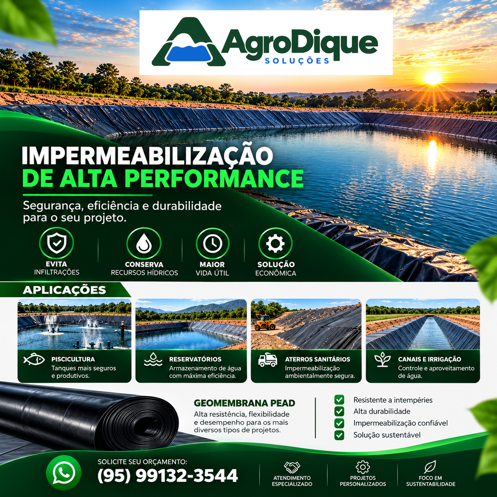
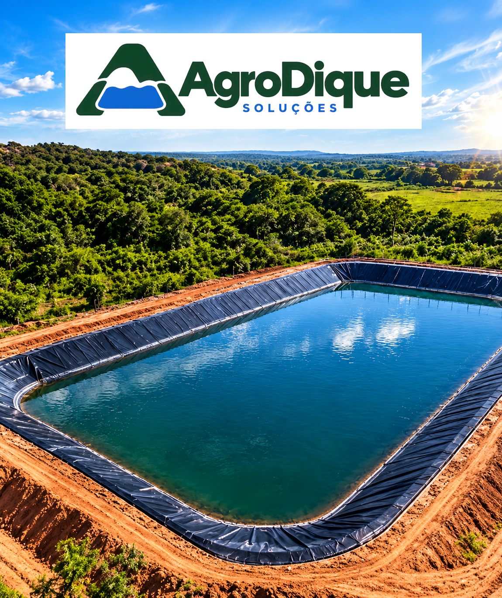
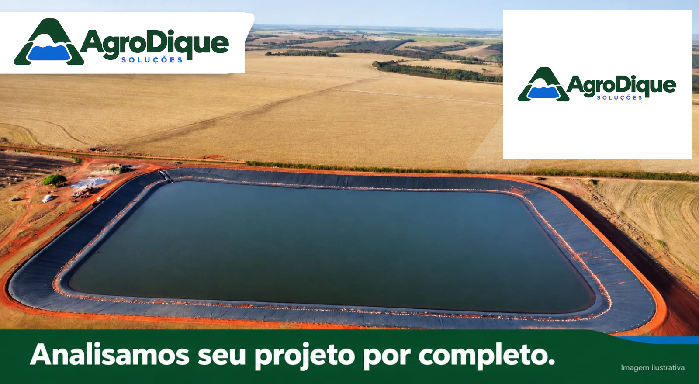
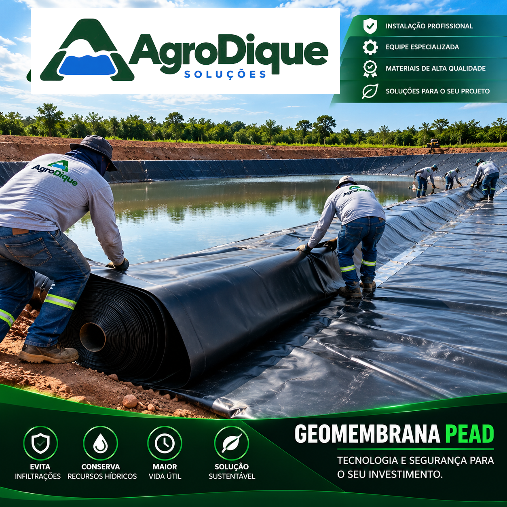
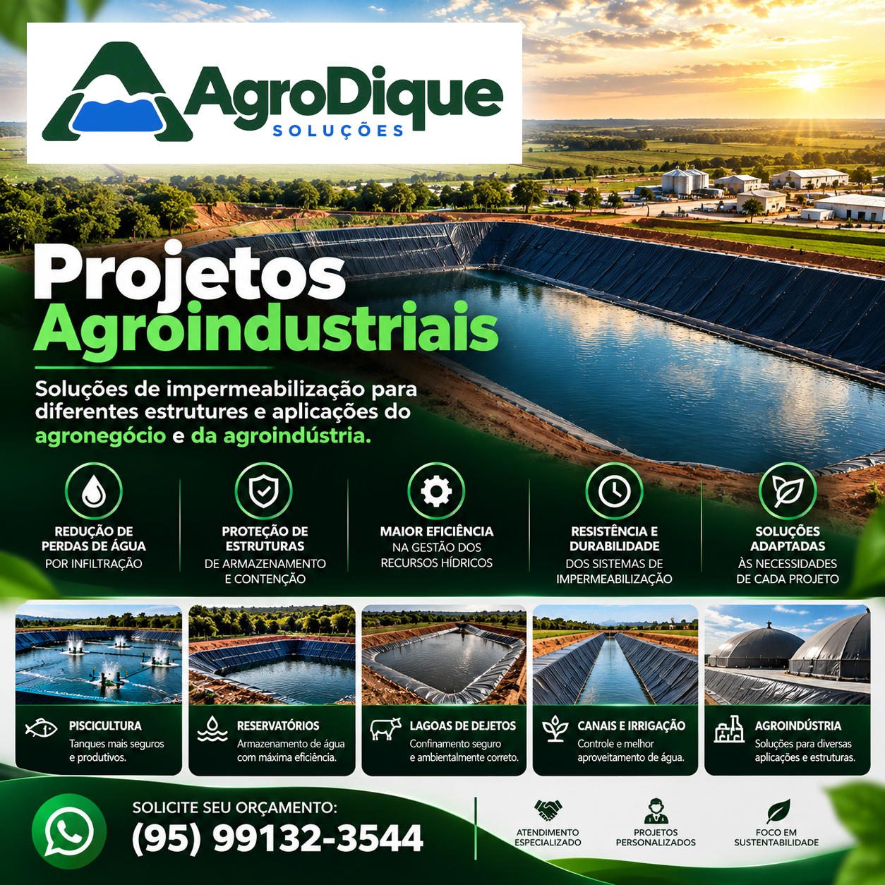

Impermeabilização de reservatórios
Soluções para reduzir perdas de água por infiltração em reservatórios e estruturas de armazenamento.
Saiba maisTecnologia, eficiência e segurança em impermeabilização para transformar projetos em resultados duradouros.

A AgroDique Soluções atua no segmento de impermeabilização com geomembranas, oferecendo soluções para reservatórios, viveiros de piscicultura e estruturas de armazenamento de água.
Nosso propósito é contribuir para empreendimentos mais eficientes, seguros e sustentáveis, com atenção à qualidade técnica de cada projeto.

Impermeabilização técnica para estruturas que precisam de confiabilidade, durabilidade e eficiência hídrica.

Soluções para reduzir perdas de água por infiltração em reservatórios e estruturas de armazenamento.
Saiba maisRevestimento de viveiros e estruturas destinadas à produção aquícola, com atenção à segurança e à eficiência.
Saiba mais
Aplicação de materiais de impermeabilização conforme as necessidades técnicas de cada projeto.
Saiba mais
Soluções de impermeabilização para diferentes estruturas e aplicações do agronegócio e da agroindústria.
Saiba maisQuatro pilares orientam cada projeto que executamos.
Soluções pensadas para o melhor aproveitamento dos recursos hídricos em cada empreendimento.
Utilização de materiais e técnicas adequados às aplicações e às condições de cada obra.
Atenção à qualidade da instalação e às boas práticas em cada etapa do serviço.
Contribuição para a gestão responsável da água e para empreendimentos mais sustentáveis.
Conheça exemplos de aplicações das nossas soluções de impermeabilização.
Enquanto não houver projetos autorizados para divulgação, as imagens desta seção são ilustrativas. As fotografias reais das obras serão publicadas assim que autorizadas pelos clientes.
Conte com a AgroDique para encontrar soluções de impermeabilização adequadas às necessidades do seu empreendimento.